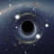

What is astronomy?

Astronomy is the study of objects and matter outside the earth's atmosphere and of their physical and chemical properties.
Common misconceptions
A lot of people have some pretty big misconceptions about space. To be fair, very few of us have ever been, there’s a lot more to study before anybody really knows what’s actually going on up there.
Random facts
- Star clusters close to each other have roughly similar properties and a common origin.
- The Andromeda Galaxy is one of a few galaxies that can be seen unaided from the Earth.
-  An event horizon is a boundary beyond which events cannot affect an outside observer.